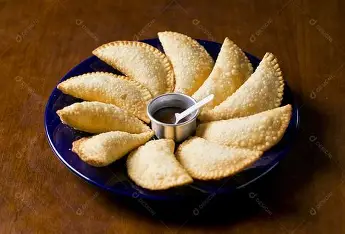
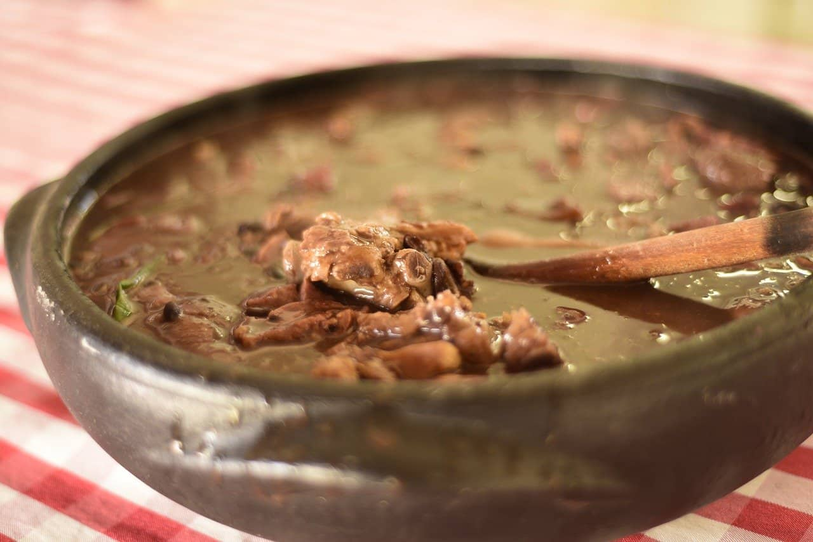

Pastel de Vento
São Paulo - SPA tradição das feiras paulistas que conquistou o Brasil inteiro.

A tradição das feiras paulistas que conquistou o Brasil inteiro.

O prato que simboliza a união e a história da mesa brasileira.